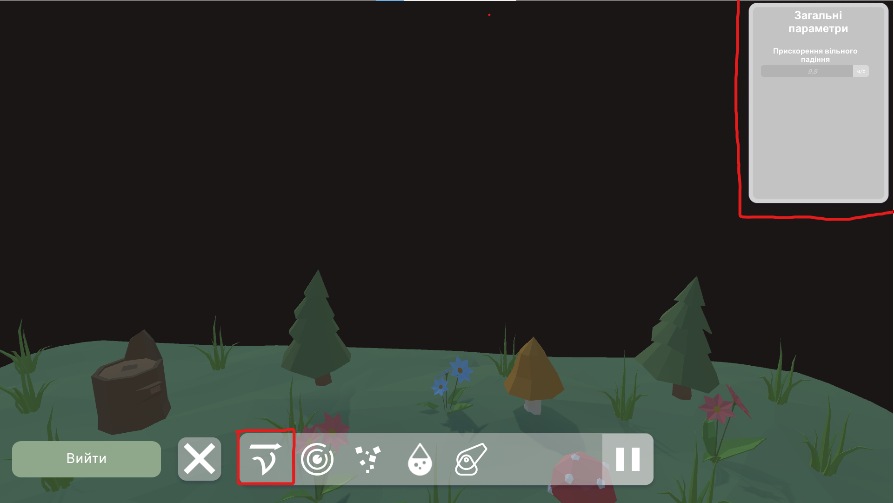
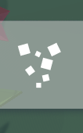

1.0 Відомості програми
Цей проєкт створено на «Турнір юних інформатиків 2023-2024 н. р.». Ідеєю програми було створити зручний графічний інтерфейс, через
який можливо легко змінювати параметри й бачити зміни у реальному часі. Сам проєкт – фізичний 3D симулятор,
що моделює роботу ППО/ПРО. Якщо будуть питання, то завжди звертайтесь у довідник.
1.1 кнопки на панелі налаштування параметрів
1.1.1 Загальні параметри
Загальні параметри торкаються правил фізики у симуляції. На поточний момент можна налаштувати коефіцієнт
вільного падіння, у якого значення за замовчуванням 9,8 (стандарт для планети Земля)

1.1.2 Параметри гармати
Параметри гармати дозволяють гнучко редагувати параметри гармати та снаряду. Ось список усіх параметрів та їх значення:
- Час наведення – час наведення гармати на ціль (c)
- Швидкість – початкова швидкість снаряду, що випускається з гармати (м/с)
- Прискорення – параметр, що вказує прискорення снаряду, якщо значення 0, то рух снаряду буде рівномірним (м/с²)
- Радіус ручного вибуху – вказує радіус, у якому можна зробити ручний вибух снаряду (м)
- радіус автоматичного вибуху – вказує радіус автоматичного вибуху снаряду, якщо до того користувач не підірвав ракету вручну (м)
- дистанційний підрив – параметр, що вказує чи буде дистанційний підрив у снаряду (булева зміна)
- повороткість – параметр, що визначає швидкість повороту снаряду до цілі (°/с)
1.1.3 Параметри цілі
Параметри цілі – це інструмент редагування траєкторії польоту цілі. Параметрих та їх значення:
- Швидкість – Початкова швидкість цілі (м/с)
- Прискоренння - параметр, що вказує прискорення цілі, якщо значення 0, то рух її буде рівномірним (м/с²)
- Повороткість - параметр, що визначає швидкість повороту цілі до цілі (°/с)
- Маса – маса цілі (кг)
- Пряма траєкторія польоту – визначає, якою буде траєкторія польоту (булева зміна)
- Розміри – параметр, що задає розміри для цілі (м; ширина, довжина, висота)
1.1.4 Параметри палива
Кожна навідна ракета має деякий об’єм палива. Через пункт параметрів палива можна
редагувати об’єм та можливість зробити паливо нескінченним.
1.1.5 Параметри вибуху
Параметри вибуху впливають на спец. ефекти, дає можливість змінювати швидкість та
розміри уламків.
